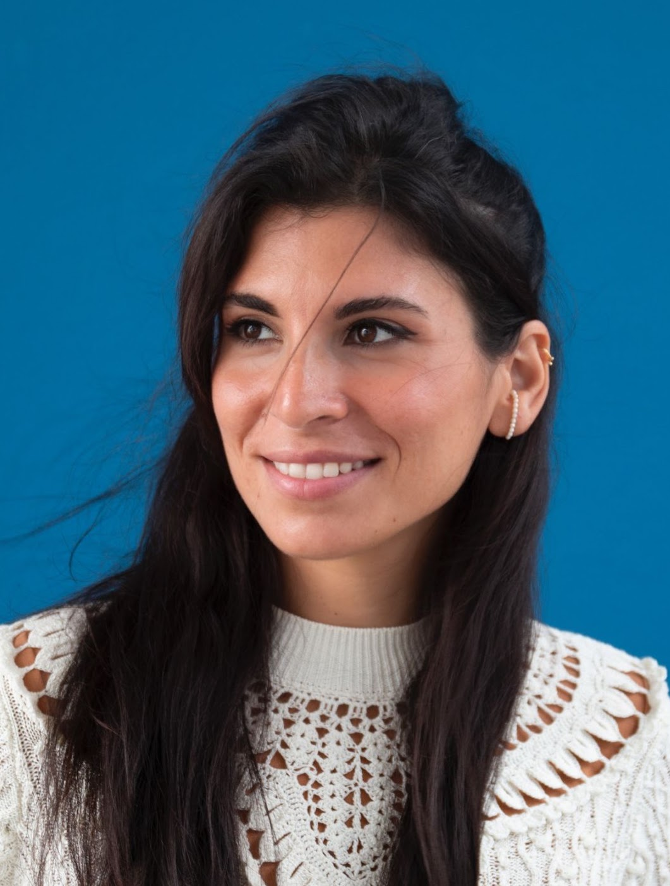
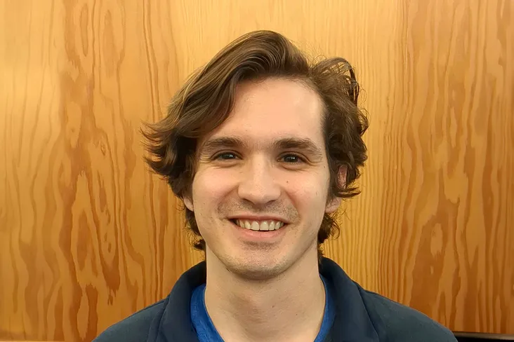
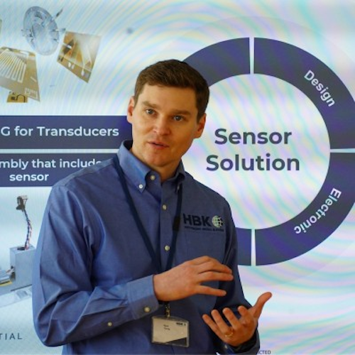

01 / Overview
Contact can be
a capability.
How do we plan for contact, control it, and learn from it?
Contact can be a capability. This proposed workshop brings together aerial robotics, planning, control, learning and contact mechanics to explore how UAVs can interact with their surroundings, remain stable through impacts and recover when contact is unexpected.
Physical intelligence connects decisions to the body: coupled flight and end-effector planning, interaction-aware control, and morphology and compliance that make contact useful.
02 / Research questions
From avoiding contact
to working with it.
Six connected questions across planning, control, learning and robot design.
Plan with contact
Coupled flight and end-effector planning, contact-inclusive motion planning and learned policies for inspection, perching and aerial manipulation.
Regulate interaction
Force and impedance control, contact sensing and estimation for stable, purposeful aerial interaction.
Recover from impact
Collision detection, state estimation and resilient control when contact is unintended.
Learn across environments
Reinforcement learning and sim-to-real transfer for changing surfaces, uncertain dynamics and contact transitions.
Design for physical intelligence
Compliance, morphology and reconfiguration that expand what aerial planning and control can achieve.
Compare meaningful capabilities
Shared tasks, metrics and evaluation practices for contact-aware UAVs and their real-world deployment.
03 / Speakers
People & perspectives.
The contributors below have confirmed participation. Research interests are shown here; talk titles in the draft programme remain provisional.

Marco Tognon
Inria
Sensor-based robotics and aerial physical interaction
Confirmed speaker
Salua Hamaza
TU Delft
Aerial touch, tactile sensing and perching
Confirmed speaker
Steven Ceron
University of Michigan
Soft-actuated microrobots and collective behavior
Confirmed speakerBio-inspired robots that perch and cross air and water
Confirmed speaker
Ryan Young
HBK
Testing and measurement for contact-capable UAVs
Confirmed industry contributorMore perspectives to come
Two keynotes and four invited slots remain open. Remaining invitations will prioritize complementary expertise, women researchers and researchers based in Korea and the Asia-Pacific region.
04 / Programme
One day.
Connected questions.
Planning and control in the morning. Contact-capable design and deployment in the afternoon. Discussion connects the two.
Morning
Contact-inclusive planning, control & learning
Welcome & workshop questions
Organizing team
Keynote 1
Speaker to be announced
Sensor-Based Robotics and Safe APhI
Marco Tognon · Inria
High-Performance Control Strategies for Collision Recovery
Salua Hamaza · TU Delft
Early-career lightning talks I
Three selected contributions · 5 minutes each
Transition to posters
Coffee, posters & static drone displays
Meet the authors and explore the hardware
Invited talk 3
Speaker to be announced
Invited talk 4
Speaker to be announced
Invited talk 5
Speaker to be announced
Moderated discussion
Questions for the morning speakers
Lunch, posters & static drone displays
Programme resumes at 14:00Afternoon
Contact-capable design & deployment
Keynote 2
Speaker to be announced
Synergetic Morphologies and Aerial-Aquatic Resilience
Steven Ceron · University of Michigan
Designing for Contact: Bio-Inspired Robots that Perch and Cross Air and Water
Raphael Zufferey · MIT
Coffee, posters & static drone displays
Invited talk 8
Speaker to be announced
Early-career lightning talks II
Three selected contributions · 5 minutes each
Industry spotlight: testing & measurement
Ryan Young · HBK
Grand panel: deploying contact-aware UAVs
Audience questions, shared challenges and next steps
Best poster recognition & closing
Organizing team
Draft programme. The named contributors have confirmed participation; talk titles are provisional. All times and room arrangements are subject to the conference allocation. Keynotes include 35 minutes plus 5 minutes for questions; invited talks include 20 minutes plus 5 minutes for questions.
05 / Participate
Bring your work.
Shape the discussion.
Research contributions, practical mechanisms and open questions all have a place in the conversation.
Call for contributions
We plan to invite 2–4-page extended abstracts in IEEE format, with up to 30 posters and six lightning talks reserved for PhD students, postdocs and faculty within three years of their first independent appointment, with career breaks considered. Each submission is planned to receive two reviews. Industry and academic contributions are welcome.
The planned submission platform is OpenReview. A submission link and final instructions will be released after workshop acceptance.
Publication & sharing
Accepted contributions are intended for the workshop website, with author permission, and are separate from the IEEE proceedings. Any collective preprint or follow-up perspective will depend on author agreement and editorial feasibility.
Bring an idea
Share early results, open problems or a reproducible evaluation task. After acceptance, organizers plan to assign mentors for early-career contributors and offer feedback through poster discussions.
Show the mechanism
Authors may propose static displays and videos of contact-capable UAVs. Displays depend on space and organizer approval; no flight demonstrations are planned.
Shape the discussion
Audience questions will inform the moderated discussion and closing panel. We aim to identify shared challenges and useful evaluation practices.
A short written synthesis of benchmark questions and open challenges is a planned workshop outcome.
06 / Organizing team
Across disciplines.
A shared question.
Researchers in aerial robotics, planning, control, learning and design, with doctoral researchers helping shape the workshop.
Wenlong Zhang
Arizona State University
USAPrimary contactPakpong Chirarattananon
University of Toronto
CanadaMoju Zhao
University of Tokyo
JapanJunyi Geng
Pennsylvania State University
USAKarishma Patnaik
University of Michigan–Dearborn
USAMirko Kovac
Empa & EPFL
SwitzerlandPham Huy Nguyen
Empa & EPFL
SwitzerlandAmirali Abazari
Arizona State University
USAValentin Gaucher
Arizona State University
USA07 / Contact
Let’s make contact.
For questions about the proposed workshop, contributions or static hardware displays, get in touch with the primary organizer.